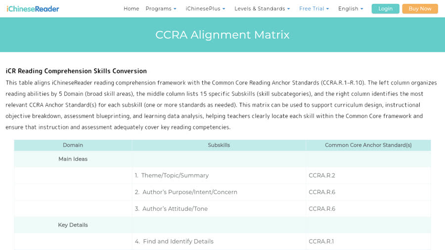
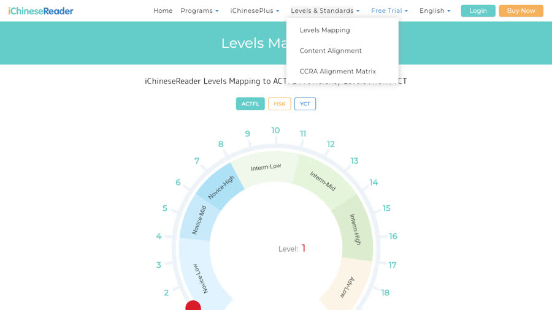
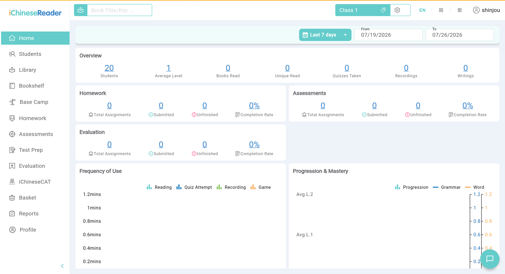
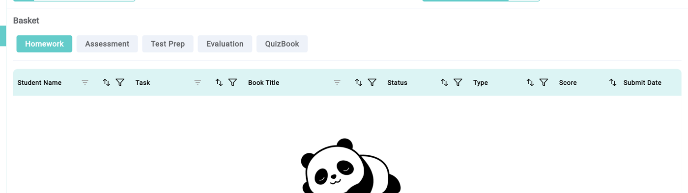

內部資料 · 競品研究 · 2026-07-26
「這個 project 就是在做中文的 Amira」—— 這句話方向對，但 Amira 真正在賣的不是 AI 家教，是州法規定要做的法定評測 而中文根本沒有 WCPM 這個量尺，那是我們得自己定義的空白
把它們並列比較會誤導 —— 一家是出版社做的內容平台，一家是研究機構孵出來的評測公司，我們是第三種：綁單一國家課綱的母語教學工具
| iChineseReader（爱读） | Amira Learning | LingoLeap | |
|---|---|---|---|
| 本質 | 內容庫 + 班級管理 + 老師人工評分 | 法定評測 + AI 家教 | 台灣國教課本 + 自動朗讀評測 + OMO 學習單 |
| 母體 | Nan Hai (USA)，出版社的美國分支 | CMU Project LISTEN，1990 年起 25 年研究 | 曾世杰／陳淑麗教授的教學設計 |
| 規模 | 1,000–3,000 本讀本 / 20 級 | 5.5M 學生、4,000+ 學區、約 15% K-12 市佔 | 158 課（目標 180）、單一學校試用階段 |
| 賣給誰 | 美國 K-12 中文學校（immersion／heritage／CSL） | 美國學區、各國教育部 | 台灣國中小（非營利） |
| 錢從哪來 | 學校或個人訂閱，按人數報價 | 學區 outcomes-based 合約 | 開源非營利 |
| AI 的位置 | 加值配件（自動出教案） | 產品本體（自研兒童語音辨識 + Claude 理解對話） | 產品本體（朗讀評分 + 蘇格拉底對話 + 內容抽取） |
| 護城河 | 內容產能 + ACTFL 展會與學區通路 | 110 億字兒童朗讀語料 + 州級法定 screener 認證 | 繁中注音朗讀評測 + 台灣課綱深度 + 已在教室裡的老師關係 |
| 最大弱點 | 口說只有錄音沒自動評分；App Store 3.2★ | 只做英文與西文，不碰漢字 | 內容量小、無跨課掌握度、無能力分級、尚無商業模式 |
◎ 有且是強項｜△ 有但弱｜✕ 沒有｜— 不適用 最右欄是我們
| 能力 | iChineseReader | Amira | LingoLeap |
|---|---|---|---|
| 自動語音評分（朗讀流暢度） | ✕ 無 | ◎ 強 — 音素層級 | ◎ 有 — 字級正確率 + 每分鐘字數 |
| 中文特有教學（注音／筆順／聽寫／破音） | ✕ 無 | — 不適用 | ◎ 強 |
| 紙本學習單 ↔ 線上（OMO） | ✕ 無 | ✕ 無 | ◎ 強 |
| 台灣課綱對齊 | ✕ 對美國 CCSS／ACTFL | ✕ 對美國各州標準 | ◎ 強 |
| AI 對話式理解教學 | ✕ 只有選擇題 eQuiz | ◎ 有 — Claude 離線預生成 | ◎ 有 — 蘇格拉底即時對話 |
| 跨課技能掌握度追蹤 | ◎ 有 — CCRA 矩陣（實機確認在線） | ◎ 強 — 每日 Estimated Mastery | ✕ 無 |
| 能力分級 / 入班定位測驗 | ◎ 有 — 20 級 ACTFL／HSK／YCT + CAT | ◎ 強 — ISIP 電腦適性 | ✕ 無 — 按年級排 |
| 內容量 | ◎ 1,000–3,000 本 | — 用學區既有教材 | △ 158 課 |
| 法定評測地位 | ✕ 無 | ◎ 強 — 州法 K-3 篩檢核准 | ✕ 無 |
| 老師端「該做什麼」提示 | ✕ 只有報表 | ◎ 有 — 差異化教學建議 | ✕ 無 — 只有 dashboard |
| 自由閱讀書櫃 / 興趣分級 | ◎ 有 — Interest Level 與難度分開 | — 不適用 | ✕ 無 |
| 語言覆蓋 | 簡體 + 繁體 + 粵語 | 英文 + 西班牙文 | 繁體 + 注音 |
這三項不是這次的新發現 —— 2026-03 的國際平台分析就已標為我們的缺口
| # | 假設 | 判定 | 證據 | 關鍵證據 / 為什麼不能更強 |
|---|---|---|---|---|
| H1 | iChineseReader 沒有自動語音評分 | 證實 | E4 + E3 | 實機登入教師端後確認兩件事：① 批改收件匣 Basket 的欄位只有 Student／Task／Book Title／Status／Type／Score／Submit Date —— 單一 Score 欄，沒有正確率、每分鐘字數或錯誤類型欄，而自動語音評分需要那些欄位 ② 教師端 13 個 section 與全部子 tab 都沒有「IB Speaking」，那原本是唯一可能讓結論翻案的未知 仍未看到的是「完成的錄音被評分」那一刻的畫面 —— 該示範帳號沒有任何 submission |
| H2 | 它的分級軸是語言難度、不是閱讀策略 | 推翻，而且比我原本以為的更徹底 | E4 | 20 級確實對照 ACTFL／HSK／YCT 語言能力，但那只是一條軸 實機登入後看到：教師 dashboard 的 Standards Overview 是每個學生 × CCRA.R.1–R.8 的即時掌握度矩陣（0-49％／50-79％／80-100％ 三色帶），而且每本書都掛 CCRA 技能標籤 也就是說那套閱讀技能框架不是靜態對齊頁，是上線運轉中的跨課技能追蹤 |
| H3 | AI 只在教師端，學生端無 AI | 證實 | E4 | 實機進到學生端閱讀器：控制項是簡體／繁體／無字、國語／粵語／無音訊、自動播放、拼音、音檔播放器、書本背景、寫字板（存檔／送給老師與家長）、加入書櫃 —— 沒有任何 AI 回饋或評分控制項 |
| H6 | 「評測 > 練習」在台灣也成立 | 未完全證實 | E3 | 有證據的是：老師不想學新工具、代跑服務有價值、三版本自動化確實省工 但這是交付形態偏好，不等於採購理由 —— 採購錨點要靠訪談或真實報價驗 |
| H7 | Amira 短期不會進繁體中文 | 拆三段 | E3 / 待核 / 推論 | E3 證實：教學語言只有英文與西文（官方產品頁 + 官方影片旁白） 待核：「20 國 18 語言」出自二手摘要，且「20 國」是市場足跡與教學語言是兩件事 推論非證據：「12 個月內不會進」是預測 |
證據分級：E1 官網文案｜E2 第三方報導或二手摘要｜E3 官方技術文件、使用手冊、官方影片逐字稿｜E4 自己實機操作加截圖｜E5 可重現量測
一開始判斷「他們只有內容廣度，閱讀策略的深度是我們獨有」—— 實機看了他們的標準頁之後，這句話不準確


他們的 15 個子技能是國際通用的閱讀理解技能套用到中文文本；我們的策略主軸是中文語言特有的結構（句型、寫作手法、文言），綁台灣課綱 兩邊都是策略軸，內容不同 而且他們的 Skill Point 報表是逐個學生累積的 —— 跨課掌握度我們完全沒有
Amira 整套建立在兩個英文特有的地基上：WCPM（每分鐘正確字數）和音素解碼 它自己的影片說得很明白 —— 「I can uniquely analyze their speech down to the phone level」，畫面上是學生把 h / i / p 三塊字母磚重組
只有 D2 的「他們有策略框架」這半句站在 E4 上，其餘皆為 E3 或推論 —— 下注前先看「還缺什麼」
| # | 要決定的事 | 建議 | 還缺什麼才敢下注 |
|---|---|---|---|
| D1 | 理解對話要不要改 closed-loop 預生成 | 值得做 spike，但先量涵蓋率再決定 | 涵蓋率 / 人審工時 / 單次成本三個數字 |
| D2 | iChineseReader 是競品還是不同物種 | 不同物種，但不是「他們比較淺」 —— 他們是國際閱讀技能框架 × 中文素材 × 老師人工評分；我們是台灣國教課本 × 中文特有語言結構 × 自動語音評分 語音評測確實是真空（實機確認） | 只差最後一哩：沒看到「完成的錄音被評分」的畫面（示範帳號無 submission） 但翻案風險已消除 —— 全站沒有 IB Speaking，Basket 也沒有語音指標欄 |
| D3 | 對外敘事要不要改成「AI 幫老師省」 | 方向對，而且要決定服務 → 工具的切換條件，不只換文案 | 採購錨點未驗，要一次老師或學校端訪談問「你會為什麼付錢」 |
| D4 | 中文朗讀量尺下一個維度做哪個 | 斷句仍是最有原創性的候選 —— 英文有空格所以評測沒有這個維度，中文斷句錯就是句法沒解析對 | 斷句訊號能否從既有錄音抽出，以及與理解分數的相關性 |
| D5 | Amira 進中文的時間窗有多急 | 教學語言只有英/西文，跨到漢字距離遠；近程壓力更可能來自 iChineseReader 加語音（它已有中文內容與 CCRA 框架，只缺語音） | 「12 個月內不會進」是推論不是證據；「20 國 18 語言」原始來源仍待核 |
D2 整段懸在 IB Speaking 上 —— 只能證明 Running Record 那條流程的手冊沒寫自動評分，證不了整個平台沒有 如果 IB Speaking 有自動語音評分，「語音評分是我們的真空」這個結論直接翻案
用公開分享的老師帳號登入 /icr5/teacher，走過 13 個 section 與全部子 tab 三件只有登入才看得到的事
每個學生 × CCRA.R.1 Detail／R.2 Main Idea／R.3 Chronology／R.4 Vocab／R.5 Text Structure／R.6 Point of View·Purpose／R.7 Media Integration…，三色帶 0-49％／50-79％／80-100％ 我原本判斷這只是靜態對齊頁，錯了 —— 這正是我們沒有的東西，而它在線上跑著

Basket 的欄位是 Student Name／Task／Book Title／Status／Type／Score／Submit Date 沒有正確率、每分鐘字數、錯誤類型 —— 做自動語音評分的產品需要那些欄位（Amira 的 running record 就是給錯誤類型的）

行銷頁提過的 IB Speaking 在產品裡不存在（13 section 全掃過）—— 這消除了唯一可能讓結論翻案的未知 反而看到學生端閱讀器支援 國語／粵語，服務對象包含粵語背景華裔，跟我們市場不重疊
/icr5/teacher/* · /book/技術路徑：app 在 /icr5/（與行銷站分離）Flutter canvas 在無 GPU 的 headless 環境登入視窗打不開 —— 這是第一輪驗不到教師端的真正原因，換成 headed + GPU 才進得去